R3 / 保留展开外形，研究相机与接触
上大下小、左右镜像保持；上下鱼眼外倾。凸起接触垫与凹入灯窗同侧。收纳区域是较长包络候选，不是最终闭合姿态；抓持也尚待验证。
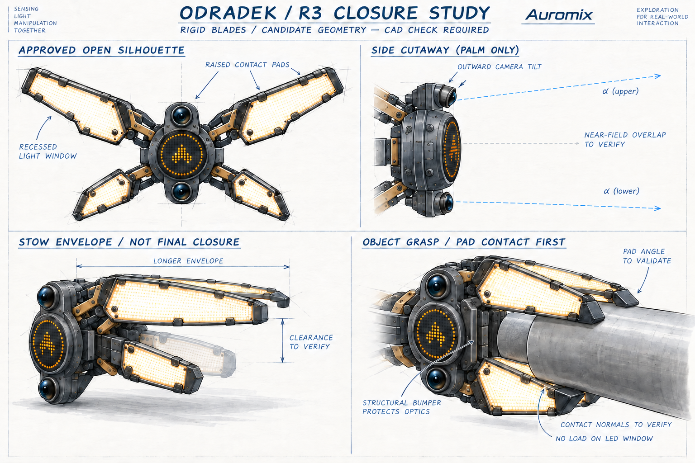
R3 / 从同一参数模型检查闭合
长短板同角闭合的反例、四板六对独立角域与连续分离界，以及相机近场重叠曲线。D 为任意研究单位；该模型不含掌体、关节、软垫、工件或线束。
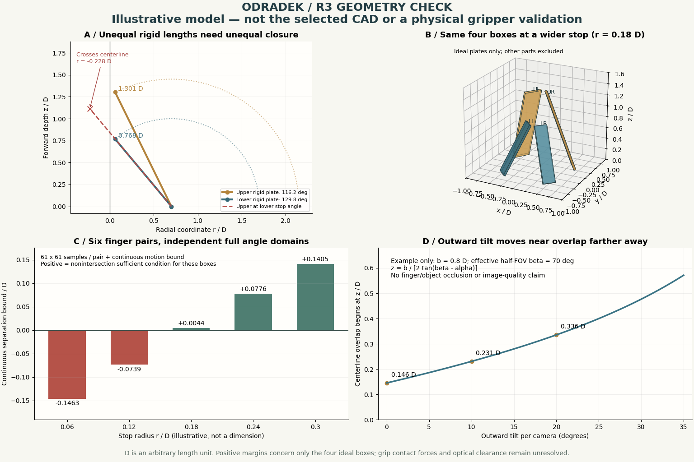
R2 历史 / 末端状态探索
展开剪影已被选定，但紧凑保护茧未证实可达；R3 已重新检查闭合、灯面与接触垫关系。保留此图记录过程。
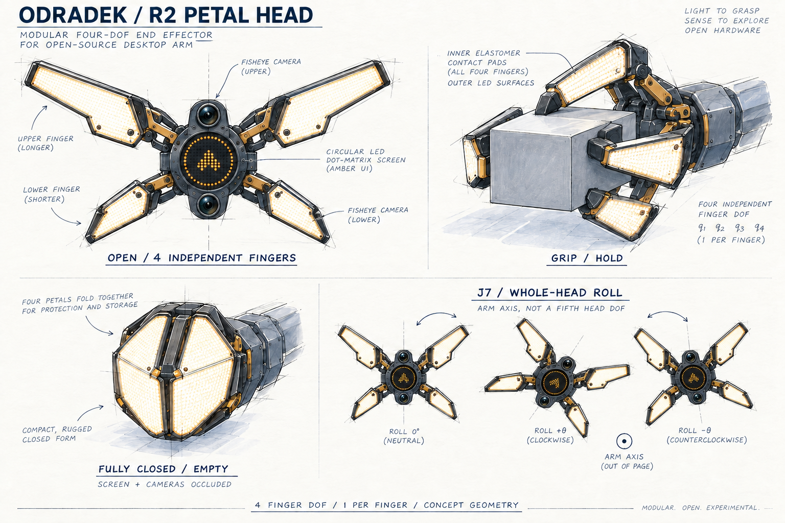
R2 / 七轴本体与可拆末端
J7 归本体，轴线垂直末端正面；可拆分界在 J7 输出法兰之后。四指执行器与端侧控制拟放在末端内；接口与线束尚待设计。
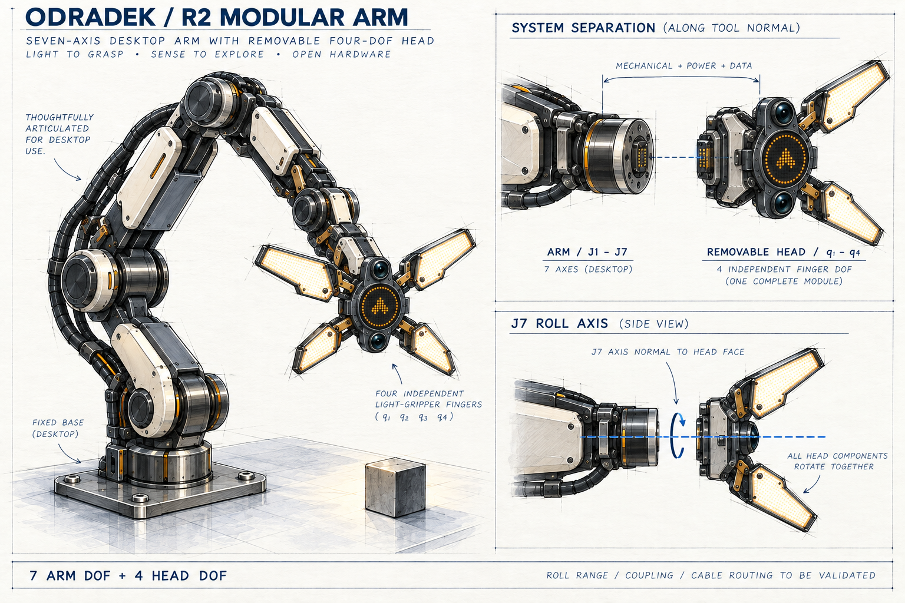
R2 / 3、4、5 片的艺术比较
3 片轻巧偏仪器，4 片兼具工具感和生命感，5 片更像花冠或生物。四片是当前 4 DOF 主案，另两案只比较艺术表达。
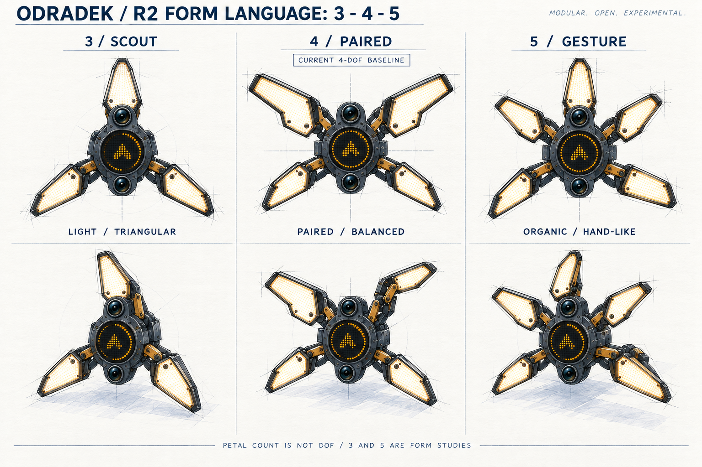
R1 历史 / 灯片兼作夹爪：二指、三指、四指
历史方案；片数与中央独立灯环已由 R2 取代。比较同一指片展开表达与闭合抓取；内侧软垫接触工件，外侧与侧缘发光。三案均待工程验证。
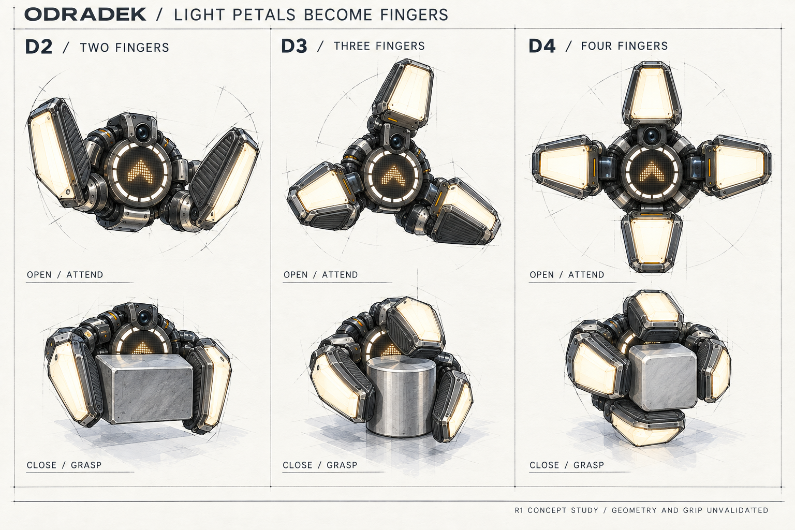
R1 历史 / 四指深化与圆形 LED 显示
历史方案；片数与中央独立灯环已由 R2 取代。D4 建议方向：四指两组对向、中心点阵与外圈任务白光。展示整臂、抓持及待机／关注／进度／完成／等待五种图案；尚未定案。
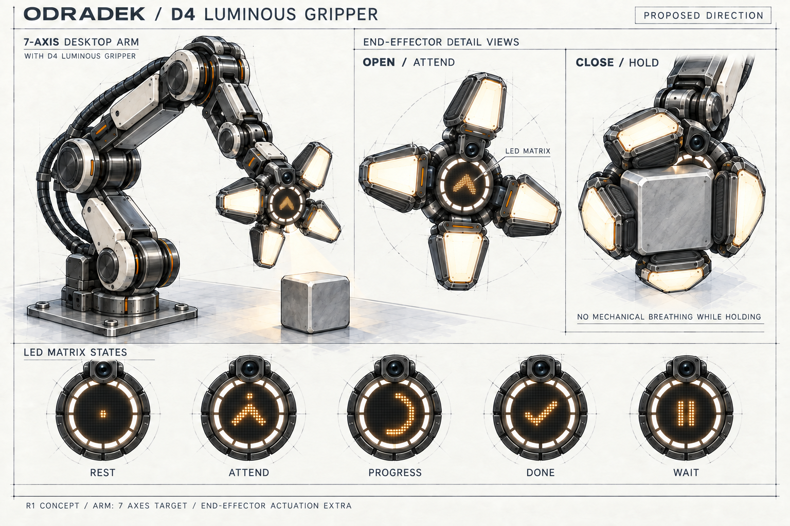
R0 历史 / 00 / 形态发散
历史发散，未体现灯片抓取。六组轮廓与光学头变体，探索灯瓣比例、收拢方式及工具关系。
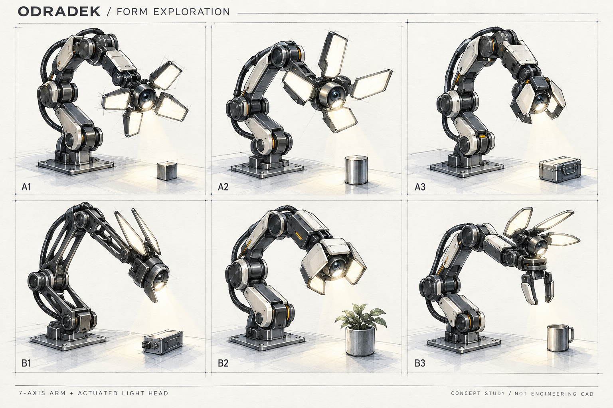
R0 历史 / A / FIELD 精密探索工具
历史发散，未体现灯片抓取。四片较宽灯瓣围绕相机与探照灯。观察头与夹爪按可换工具探索。
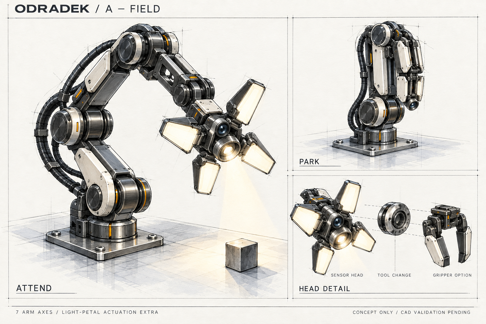
R0 历史 / B / FRAME 折叠骨架
历史发散，未体现灯片抓取。三条腕背灯片，光学头位于夹爪上方，探索注意力与实际抓取共存。
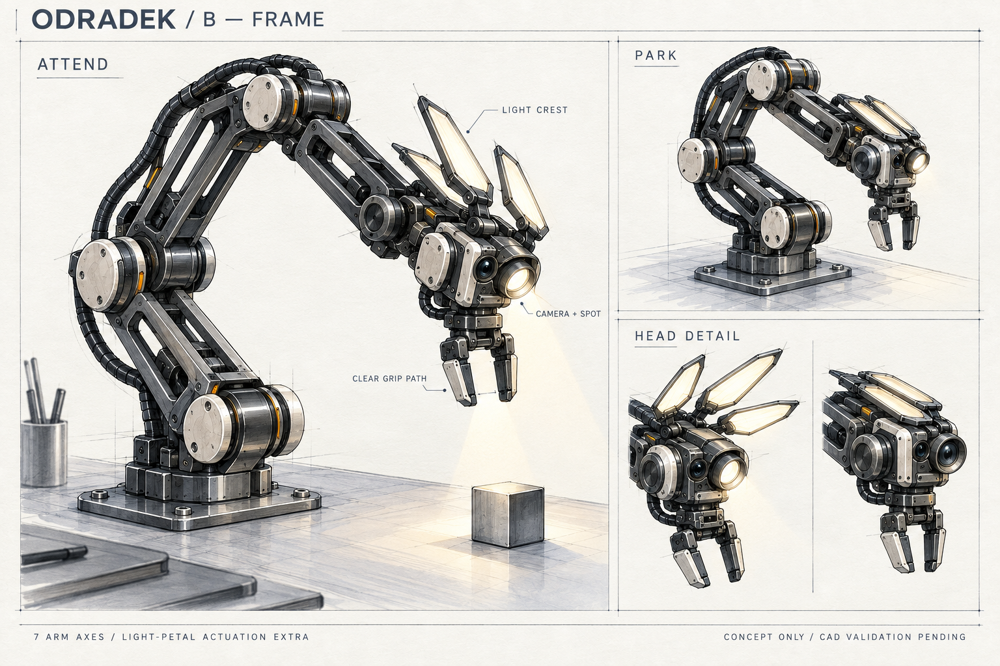
R0 历史 / C / SHELL 紧凑仪器
历史发散，未体现灯片抓取。四片短灯瓣收拢为紧凑护罩，强调光学头、分段护盖与维护路径。
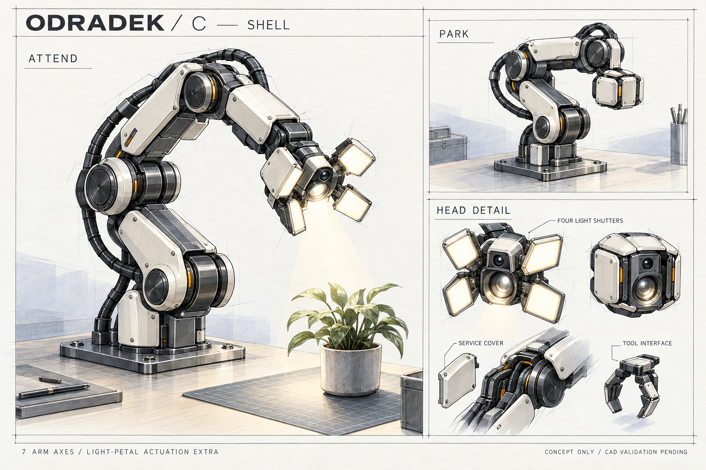
R0 历史 / 04 / 注意力与呼吸分镜
历史发散，未体现灯片抓取。以 A 方案研究休息、注意、观察、停放和局部张合；不代表已选定 A 或实现跟踪。
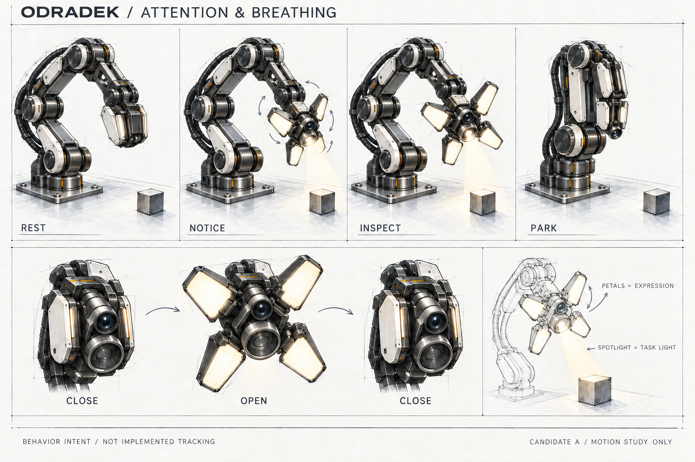